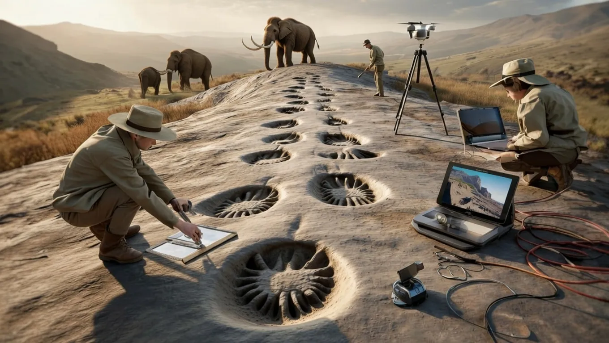

Everything We Knew is Wrong: Dinosaurs and Mammoths Were Shockingly Slower Than Believed


For decades, the general public and scientists alike have held certain assumptions about the speed of dinosaurs and mammoths. However, recent research has led to a significant shift in our understanding of these prehistoric creatures. It appears that our previous beliefs about their speed were incorrect, and a more accurate picture is beginning to emerge.
The idea that dinosaurs and mammoths were incredibly fast has been perpetuated by popular culture and, in some cases, outdated scientific theories. However, as new evidence comes to light, it is becoming clear that these animals were not as speedy as we once thought. This revelation has significant implications for our understanding of their behavior, habitat, and overall biology.
Table of Contents
The Science Behind the Speed
So, how did scientists arrive at the conclusion that dinosaurs and mammoths were slower than believed? The answer lies in a combination of advanced technologies and a reexamination of existing data. By using techniques such as computer simulations, fossil analysis, and comparisons with modern animals, researchers have been able to estimate the speed of these prehistoric creatures with greater accuracy.
One of the key factors in determining an animal's speed is its body size and mass. Larger animals tend to be slower due to the increased energy required to move their bodies. Additionally, the structure of an animal's legs and muscles plays a crucial role in its ability to generate speed. By analyzing fossilized remains and comparing them to those of modern animals, scientists can make educated estimates about the speed of dinosaurs and mammoths.
For example, studies have shown that the massive sauropod dinosaurs, such as the Argentinosaurus, were likely much slower than previously thought. These animals, which could weigh over 100 tons, were probably limited to speeds of around 5-15 kilometers per hour. Similarly, the woolly mammoth, which was once believed to be capable of speeds of up to 40 kilometers per hour, is now thought to have had a top speed of around 20-25 kilometers per hour.
Comparing Speeds
To put these speeds into perspective, it is helpful to compare them to those of modern animals. The following table illustrates the estimated speeds of various dinosaurs and mammoths, along with those of some modern animals for comparison.
| Animal | Estimated Speed (km/h) |
|---|---|
| Argentinosaurus | 5-15 |
| Woolly Mammoth | 20-25 |
| Lion | 50-60 |
| Elephant | 30-40 |
| Giraffe | 40-50 |
As can be seen from the table, the estimated speeds of dinosaurs and mammoths are generally much lower than those of modern animals. This is likely due to their larger body size and the energy required to move their bodies.
Some of the key factors that contribute to an animal's speed include:
- Body size and mass: Larger animals tend to be slower due to the increased energy required to move their bodies.
- Leg structure and muscles: The structure of an animal's legs and muscles plays a crucial role in its ability to generate speed.
- Energy efficiency: Animals that are more energy-efficient tend to be faster, as they can generate more speed with less energy expenditure.
Also Read
More trending stories →Implications and Future Research
The discovery that dinosaurs and mammoths were slower than believed has significant implications for our understanding of these prehistoric creatures. It suggests that they may have had different behaviors, habitats, and diets than previously thought. For example, slower-moving animals may have required more food to sustain themselves, which could have had a significant impact on their ecosystems.
Future research will likely focus on further refining our understanding of the speed of dinosaurs and mammoths. This may involve the use of advanced technologies, such as 3D printing and computer simulations, to create more accurate models of these animals. Additionally, the study of modern animals and their behaviors may provide valuable insights into the lives of these prehistoric creatures.
Some potential areas of future research include:
- Further analysis of fossilized remains to gain a better understanding of the structure and function of dinosaur and mammoth bodies.
- Comparative studies of modern animals to gain insights into the behaviors and habitats of dinosaurs and mammoths.
- Development of more advanced technologies to simulate the movements and behaviors of dinosaurs and mammoths.
Key Takeaways
- Dinosaurs and mammoths were likely slower than previously thought, with estimated speeds of around 5-25 kilometers per hour.
- The speed of an animal is influenced by its body size and mass, leg structure and muscles, and energy efficiency.
- The discovery of slower speeds has significant implications for our understanding of the behaviors, habitats, and diets of these prehistoric creatures.
Frequently Asked Questions
What methods do scientists use to estimate the speed of dinosaurs and mammoths?
Scientists use a combination of advanced technologies, such as computer simulations, fossil analysis, and comparisons with modern animals, to estimate the speed of dinosaurs and mammoths.
How do the estimated speeds of dinosaurs and mammoths compare to those of modern animals?
The estimated speeds of dinosaurs and mammoths are generally much lower than those of modern animals, likely due to their larger body size and the energy required to move their bodies.
What are the implications of the discovery that dinosaurs and mammoths were slower than believed?
The discovery has significant implications for our understanding of the behaviors, habitats, and diets of these prehistoric creatures, and suggests that they may have had different lifestyles than previously thought.
What are some potential areas of future research in this field?
Future research may focus on further refining our understanding of the speed of dinosaurs and mammoths, using advanced technologies and comparative studies of modern animals to gain insights into the lives of these prehistoric creatures.
Conclusion
The discovery that dinosaurs and mammoths were slower than believed is a significant finding that challenges our previous understanding of these prehistoric creatures. By using advanced technologies and reexamining existing data, scientists have been able to estimate the speed of these animals with greater accuracy. The implications of this discovery are far-reaching, and future research will likely focus on further refining our understanding of the speed and behavior of dinosaurs and mammoths.
Sarah Mitchell
Senior Tech Editor
Tech journalist with 8+ years of experience covering the latest in smartphones, EVs, AI, and consumer electronics. Bringing you accurate, well-researched stories from the world of technology.
Leave a Comment